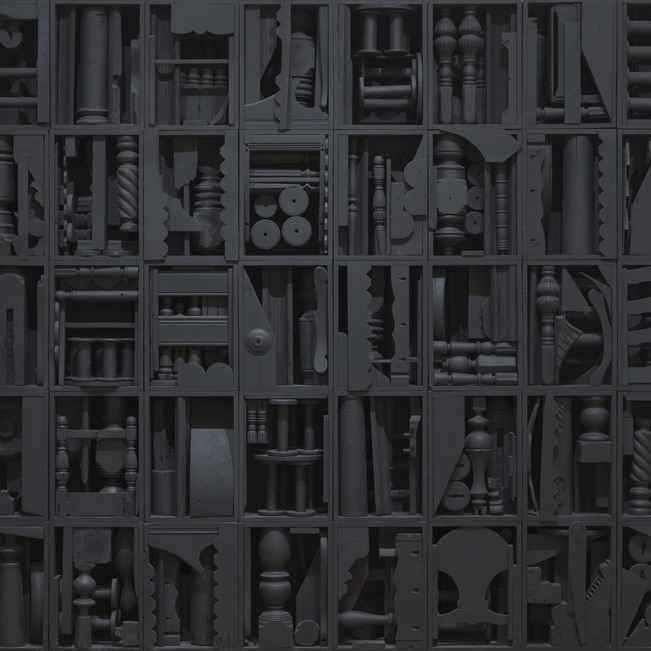

Why think about Grids?
The grid has served as a foundational structure throughout the history of aesthetic culture and remains ubiquitous among art, architecture, design, and music that we experience everyday. As a compositional device, the grid has been powerful for creators across media and disciplines, but its influence runs deeper than its practical use. The grid is much more than a formal device, it is also an icon, an interface, and an ideology; it does not simply organize units in a matrix, it is a symbol in itself, with its own character and style. Furthermore, the grid represents a conceptual system for ordering and presenting content (both material and immaterial) and influencing the way we understand it. In these many capacities, the grid posits certain ways of perceiving the world. This page is both a tribute to, and tribunal on, the grid. It is meant to illustrate the pervasive role of grids in our civilization, to show that this seemingly-neutral form is more complicated than it appears. This page is also a practical exercise in CSS Grid, a new-ish code-based layout tool for web media, and is meant as a creative demonstration of its design potential. - Edward Bacal

kinds of grids
[T]he Paleolithic brick of ancient Mesopotamia, the first grid module, is rolled into a slab and stacked to make buildings and cities. These city grids in turn are projected onto the landscape as maps and coordinate systems whose measure suggests the measure of time that is foundational for musical composition. The “looking through” of map projections suggests, by various turns, moveable type and, when peeled up as a screen, the rudiments of Renaissance space and photography and the evolution of the Newtonian universe. With the invention of moveable type and modern mechanics, grids could be mass produced, effectively becoming a universal space. This universal space takes the form of the modernist boxes of architecture and painting alike, which then melt away into the ether of the Internet’s World Wide Web." – Hannah B Higgins, The Grid Book
In its essence, there's nothing particularly complicated about the grid, which is little more than a "network of lines that cross each other to form a series of squares or rectangles," as the Oxford English dictionary defines it. No one can claim to have invented the grid, a form so intuitive and apprehensible that it seems as inevitable as the wheel. However, the grid has been constantly innovated and reinterpreted over time, it has been embraced, rejected, refined, and stretched to the limits of recognition. The grid is not nearly as rigid as it appears, nor is it as uniform as one might think. Different applications in different media evidence the grid's formal and material diversity. Not all grids are the same; for one, not all are visible: we hear the grid when we listen to music that's set to standard time-signatures and we inhabit the grid when we walk through cities or modern buildings. The grid is also something we can think, as a conceptual structure that organizes intellectual categories (consider Myers-Briggs types, the periodic table, the "political compass", or more abstractly, the way identity is mapped onto a field of directional categories). Different grids do different things for different reasons, and the way a grid operates tells us a lot about the culture that produced it. As the art historian Hannah Higgins illustrates, grids belong to historical and geographic contexts wherein the grid's makers/users have different needs and values (for example, the cartographer who views the globe from the lens of imperial expansion might employ the grid to represent territory as something ordered and rational, something to be mastered). In itself, the grid is far from a standardized, timeless template; rather, it evolves and adapts to its circumstances, building on past iterations to reinvent itself (and indeed, CSS Grid is among the latest innovations in this history, as the grid now exists in highly abstract digital formats).
To highlight this diversity and these correspondences, the following are just a few examples of grids in a few different forms:
-
painting
P A I N T I N G - S C U L P T U R E
- 
-
Photo/Film
P H O T O / F I L M - A R C H I T E C T U R E
-

- M U S I C
What about Grids?
The grid is at once an emblem of objective, rational order, and a highly constructed, contingent device. On one hand, the grid's mathematical precision and visual uniformity appeals to a Platonic ideal that stands above nature and subjectivity. In that capacity, the grid works as a screen on which to frame reality, neutralizing difference and divergence by flattening everything onto a uniform structure. As art historian Rosalind Krauss argues, "the grid states the autonomy of the realm of art. Flattened, geometricized, ordered, it is antinatural, antimimetic, antireal. It is what art looks like when it turns its back on nature, In the flatness that results from its coordinates, the grid is the means of crowding out the dimension of the real and replacing them with the lateral spread of a single surface." For Krauss, the grid is a definitively modernist form, belonging to a paradigm that resists historical and narrative temporality to exist in an abstract present. The grid thereby serves its own aesthetic ends: it exists in itself without reference beyond this modernist vacuum of timeless objectivity; it epitomizes the self-reflexiveness of modernist art that aims to map its own surface, to reduce itself to the quality of being, in essence, a mappable surface.
On the other hand, this conception of the grid is the product of modern Western thought, which as Hannah Higgins notes, does not hold a monopoly over the grid. The grid is only rational and objective to the extent it exists in an intellectual pardigm that privileges reason and objectivity. The grids of ancient Egyptian architecture don't follow the same ideologies as Italian Renaissance painting or contemporary sculpture. Moreover, the grid changes considerably over the course of modern For all its apparent rigidity, the grid is epistemologically mutable, and gains much from a measure of historical context. The following examples are some notable representatives of the grid and what it has stood for over the course of Western art since the 15th Century.
-
This diagram from the mid 15th century, by the Italian Renaissance theorist Leon Battista Alberti (1404-1472), demonstrates the foundational theory of linear perspective. Perspective is a technique for analysing and reproducing the spatial organization of the observable world, it models how the world appears from the eye's point of view. In this framework, visible matter traces back to a single, condensed point—the viewer—for whom everything is defined on a linear horizon. This conception of vision (which conveniently forgets that people see with two eyes) is profoundly influential for Western art. It provides a mathematically precise technique for depicting three-dimensional space and elaborates a philosophical basis for doing so. With linear perspective, artists could make pictures that appear like "a window onto the world," closing the gap between representation and reality. Although the idea that images should accurately reproduce vision may seem natural to us, it's very historically and culturally specific to modern Western thought. The presumption that art can, or should, reproduce an individual's objective perspective is based on highly constructed notions of art and human subjectivity. By attempting to illustrate an ostensibly objective model of ostensibly individual vision, Alberti's grid manifests a larger argument about the epistemological basis of perception itself.
-
This famous lithograph from around 1600, by the German printmaker Albrecht Dürer, depicts a draughtsman translating three-dimensional objects onto a two-dimensional surface. Notice the devices he's using to frame the scene from a fixed point of view, along with the page that's organized into an analogous grid. By using the grid in this way, the draughtsman mirrors his visual perspective onto the page, such that his eye and hand seem to work as one. He thereby replicates the objects he sees along with the methods and technologies through which he sees them.This portrayal of vision and representation demonstrates the efficacy of linear, grid-based perspective while laying bare the way it's constructed (in this case, literally implemented through tools for seeing). Moreover, this image raises larger questions about vision and subjectivity: who sees whom and how? How do gender and sexuality intersect with vision to determine how we observe bodies? And how are those ways of looking naturalized or challenged through the purportedly objective grid?
In the twentieth century, artists began exploring the grid as a subject in itself, rather than just a tool for organizing compositions. This tendency is particularly evident in Piet Mondrian's grid paintings, a landmark of modernist abstraction that remains iconic in popular culture. Mondrian's oeuvre, which spans the first half of the twentieth-century, shifts from portraying the natural world to a space of pure abstraction. For instance, the painting on the left, Still Life with Gingerpot 2 from 1912, witnesses an initial step in this direction: through its Cubist-influenced style, Mondrian breaks the still-life down into flattened geometric forms that map onto an ordered pictorial plane. By 1915, he was taking this gesture further, translating natural scenes into semi-abstract arrays of vertical and horizontal bars. Composition No. 10 Pier and Ocean demonstates this stage, approximating a landscape while simultaneously departing from it. By 1920, compositions of carefully balanced grids would define his work for all but the rest of his life. Hundreds of these compositions comprise Mondrian's exploration of an orthodox formula: rectilinear black bars on a white ground, accompanied only by boxes of primary colours. Across countless permutations, these paintings boil the medium down to a kind of elemental science, one that presents the grid as what remains when painting is stripped of the inessential. The grid becomes a key to achieving a superior aesthetic harmony that transcends the illusory space of pictorial representation, namely, the division of figure and ground.
The advent of conceptual art and minimalism in the 1960s brought new attention to the core frameworks and structures—both material and conceptual—for making and viewing art. For artists like Sol LeWitt, the grid—along with its three-dimensional counterpart, the cube—is the basis for an emphatically systematic analysis of the art object. By foregrounding qualities such as seriality, repetition, and programmed variation, LeWitt and his contemporaries posited a form of art that is deliberately devoid of subjectivity. To achieve (more or less...) this kind of aesthetic objectivity, LeWitt presents instances of variable and essentially predictable properties, employing mathematically generated compositions that obey the limitations of basic conceptual systems. In this way, the grid serves as a primary template for artistic form, a means through which to organize information as well as visual content, and to reflect the process of producing art itself. For example, 1962's Red Square, White Letters uses the grid to illustrate the range of possible combinations among four properties (red letters, white letter, white background, red background). While this work could be made in a variety of formats, the grid is particularly effective insofar as it underscores the work's conceptual basis. This work organizes the different possibilities into a neat layout that not only presents information but also expresses the system that defines it. In that way, the grid is a visual form that harmonizes with LeWitt's framework for idea-based artworks. Likewise, LeWitt's print, Variations of Incomplete Open Cubes, employs a grid layout to highlight the seriality of the work's nominal system, drawn from the cube's orthagonal structure. LeWitt also explored these interests in sculptural form, via his many three-dimensional works based on cubic units. These sculptures present the physical cube, in skeletal form, as one figure comprising a number of modular components. The modular cube appears as a unit in an array, visualized according to the given properties of its x, y, and z axes.
More recently, artists have looked back on the history of art, particularly twentieth-century modernism, to rethink what the grid means and does. On top of addressing the aesthetic influence of grids, contemporary artists have done much to illuminate their social, political, and cultural dynamics, debunking the myth of the grid's neutral objectivity. Such artists, who simultaneously critique and advance the grid's role in visual culture, demonstrate a common attitude in art of the last forty years: an embrace of the grid's formal qualities, combined with disillusionment with the ideas and limitations associated with them. These artists re-invent the grid, imbuing it with the kind of personal, political, and narrative content it was traditionally made to oppose. For instance, Mona Hatoum has actively used grids (both two- and three-dimensional) in her politically charged work, which pits personal histories of geopolitical conflict against the grid's ostensibly neutral, universal framework. Her art mimics real applications of the grid as a tool of violence and power (e.g. barbed wire fences, prison bars, cages), while using materials that speak to bodily experience (e.g. hair, soap. In this way, Hatoum collapses the binary between, on one hand, the universal, atemporal, and objective, and on the other, the particular, historical, and subjective. Or rather, she adopts the grid in order to explore the contradictions between those poles, as if to say nothing is one or the other, but a construction that always bears on the world we inhabit. Similarly, Felix Gonzalez-Torres invokes the grid to address issues of real-world violence in "Death By Gun." To make this print-based work, the artist collaged together obituaries of gun-related deaths that occurred over one week in the United States, using the grid to emphasize the scale of the problem and its systemic, recurring nature. The work gives names and faces to otherwise anonymous victims, yet it is also depersonalizing; the grid does not distinguish individuals—it is indifferent to any one segment—reminding us that this is merely a cross-section of an ever-growing contingent. To be sure, the work is meant as a condemnation of the lack of gun control that facilitates widespread violence in the US, and an expression of grief for the deceased. To express that by recourse to the grid speaks to the heart of the issue: a condition in which human life becomes a mere unit in an system that continually undermines it. Finally, Byron Kim approaches the grid
Grid Gallery
References
Hannah Higgins, The Grid Book (The MIT Press, 2009). Rosalind Krauss, "Grids" in The Originality of the Avant-Garde (and Other Modernist Myths) (The MIT Press: 1985). Jaleh Mansoon, "A Spectral Universality: Mona Hatoum’s Biopolitics of Abstraction," October 133 (Summer 2010).